Exporting a Record
Any data that you enter into Kora can be exported to your local computer. Any records will be downloaded as a file. You are able to download the files in three different formats: a zip file, a JSON file, and an XML file.
Exporting All Records for a Form
If you wan to export all the available records from a form onto your computer, follow these directions:
-
First you will have to navigate to the form you are attempting to export records from. From the Form Home page or any page within the Form Home, you have a couple of options to open up the menu. Click on either the form-name button or the menu button.
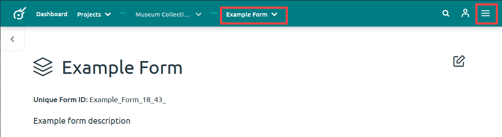
-
Once you have opened up the menu options, select Export All Records.
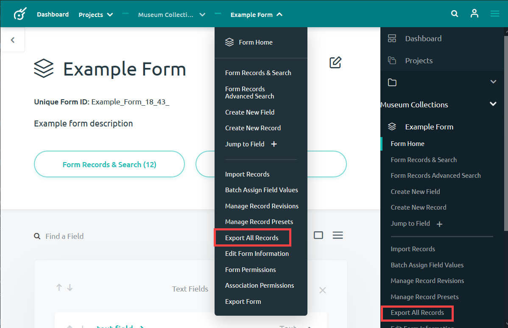
-
A window will pop up prompting you to choose how you would like to download your records. Select the file type you wish to download by clicking on it. See the last section for a description of the zip, JSON and XML file types available for download.
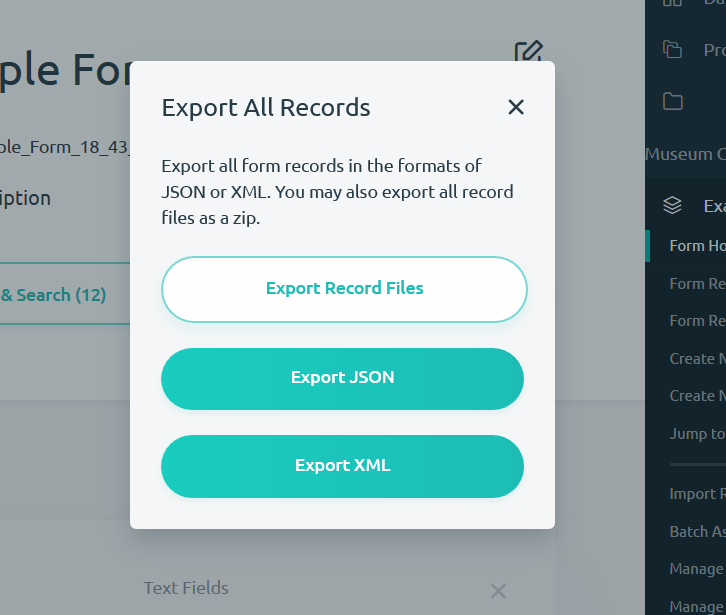
-
Once you have clicked on the file type you want to use to export your data, Kora will automatically download your records to your computer in that file type. Follow the unique instructions of your browser and computer to save the records onto your computer.
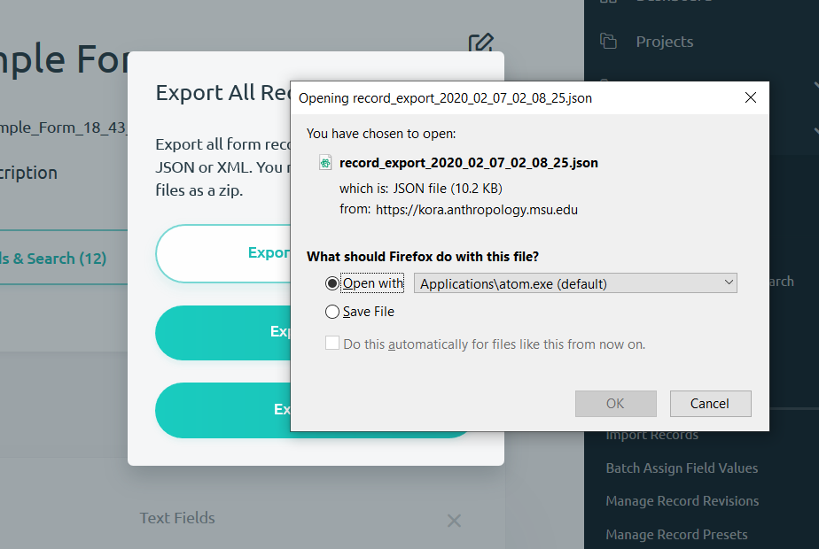
Exporting Select Records from a Forms
If you only want to select the particular records to be exported to your computer, then follow these directions:
-
First you will have to navigate to the form you are attempting to export records from. Then you will have to either click the Form Records & Search() or select this option from one of the menu options.
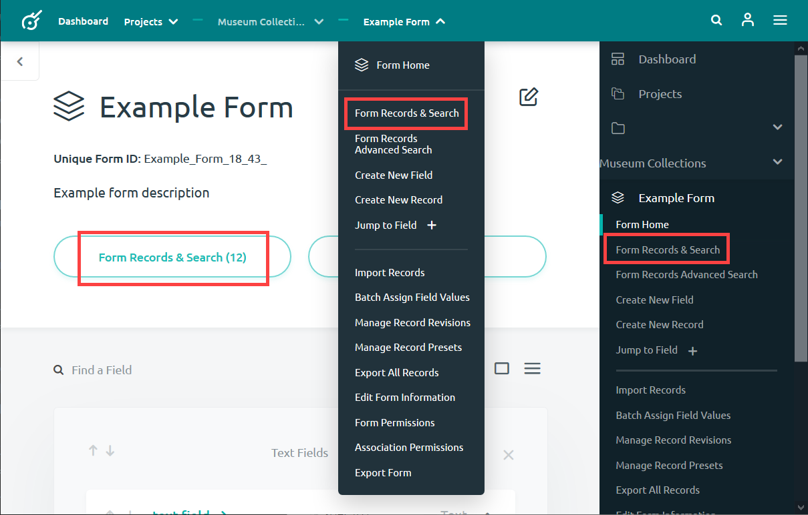
-
Once you have navigated to the Form Records & Search page, search or browse for the particular records that you want to export.
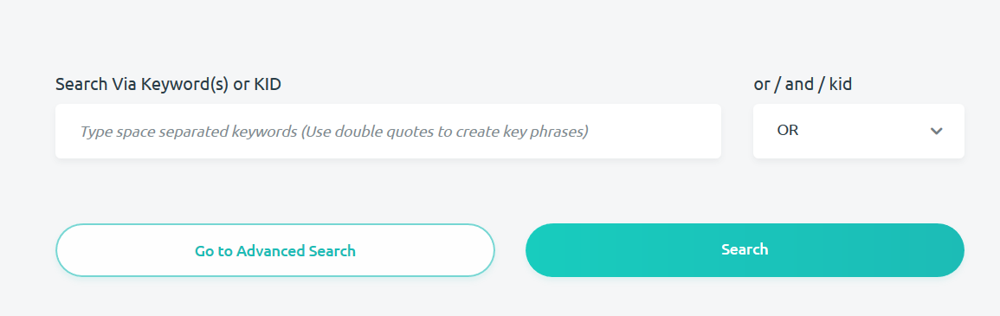
-
Select the records you want to export by checking the circle next to the record KID.
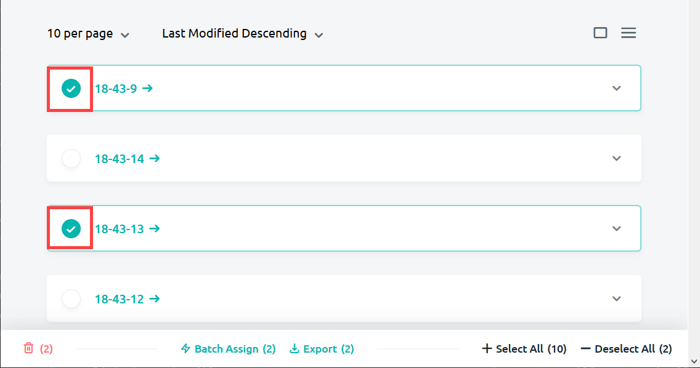
-
When you are finished selecting your records, press the export() button on the bar that appeared at the bottom of the page.
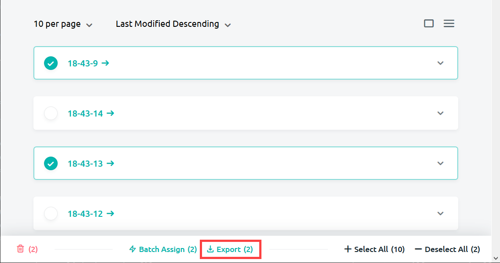
-
A window will pop up prompting you to choose how you would like to download your records. Select the file type you wish to download by clicking on it. See the next section for a description of the zip, JSON and XML file types available for download.
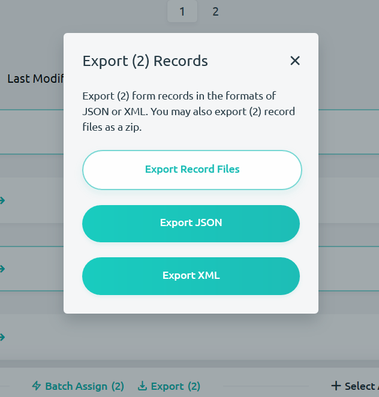
-
Once you have clicked on the file type you want to use to export your data, Kora will automatically download your records to your computer in that file type. Follow the unique instructions of your browser and computer to save the records onto your computer.
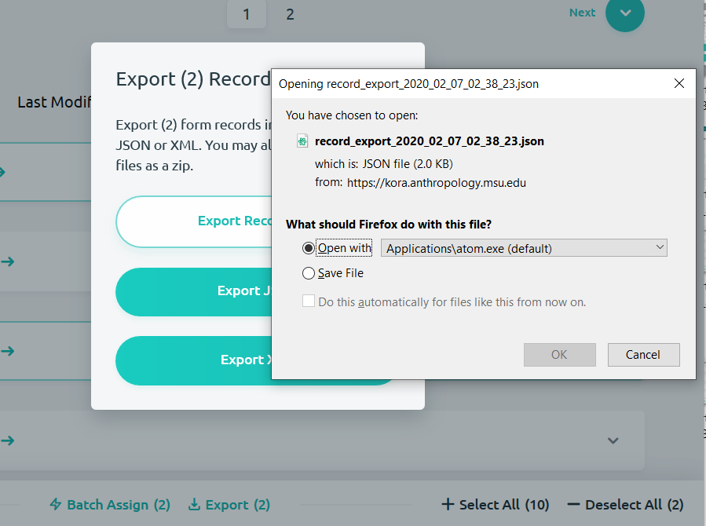
File Types Available for Export
There are three types of file types that you are able to export your Kora records as: a zip file, a JSON file, and an XML file. What follows are descriptions of these file types and links to further reading.
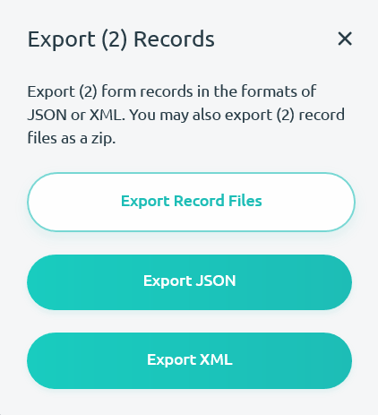
-
The Export Record Files option downloads Kora records onto your computer as a zip file. It's important to note that this will only download files entered for a record such as images, documents, audio files, etc. Any records without digital files attached to it will not appear in the folder.
-
The Export JSON file type downloads Kora records onto your computer as a JSON file. A JSON refers to the JavaScript Object Notation (JSON) format, which is a standard data interchange format. JSON files are text-based, machine-readable, and human-readable files that can be edited using a text editor. For more information on JSON file format, check out the JSON Wikipedia article.
-
The Export XML file type downloads Kora records onto your computer as an XML file. XML stands for Extensible Markup Language (XML). This is a markup language which generates human-readable and machine readable text files. XML files emphasize simplicity and the description of data. For more information on XML files check out the XML Wikipedia article.